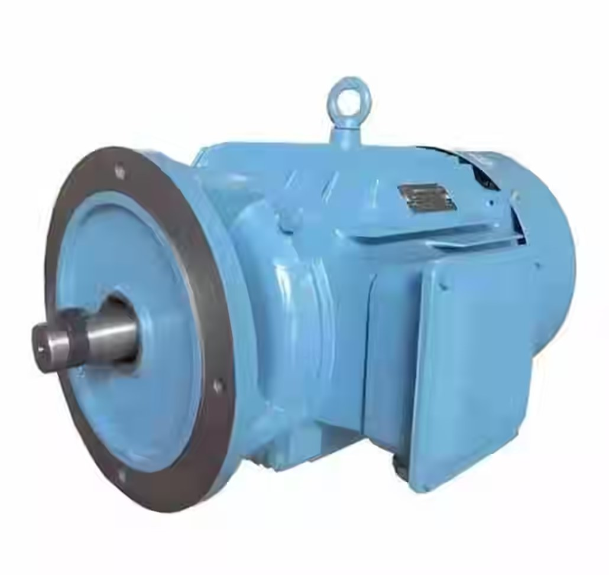

- 功率
- 0.55–30 kW
- 电压
- 380V、其他
- 工作制
- S1或S4
- 机座
- H80–H200
铁路专用设计，适应频繁启停工况
高可靠性与高效率，保证列车动力稳定
低噪音、低振动、维护成本低
支持多种额定电压、功率及安装形式定制
适应恶劣环境运行，如高温、粉尘及潮湿
广泛应用于：电力机车、动车组、铁路货运与客运牵引系统以及轨道交通装备动力系统。
一、产品概述与技术特点
1. 产品简介
西玛YTP铁路专用电机是专为铁路机车工况设计的三相异步电动机系列。该系列电机采用模块化设计理念，允许根据不同的机车需求进行灵活配置，满足各种辅助设备的动力需求。
这些电机专门用于驱动内燃机车和电力机车上的液压泵、鼓风机、轴流风机、冷却风扇、空气压缩机及其他辅助机械传动等设备。它们是机车辅助系统的核心动力源，确保机车各辅助系统正常运转，保障机车安全稳定运行。
2. 核心技术特点
西玛YTP铁路专用电机具有多项卓越的技术特点：
强大的环境适应性：电机能承受机车正常运行时的冲击和振动，并在雨、雪、风、沙侵袭时保持正常运行
优化的温度范围：适用于环境空气温度为-15℃~+40℃的工作环境
高海拔适用性：适用于海拔高度不超过1KM的地区
优异的防护性能：防护等级高达IP44、IP54或IP55，有效防止灰尘、水分和其他污染物进入电机内部
二、技术参数与性能指标
西玛YTP铁路专用电机覆盖了广泛的技术规格，满足不同机车辅助设备的动力需求。以下是该系列电机的主要技术参数：
| 参数类别 | 技术规格与性能指标 |
|---|---|
| 机座号范围 | H80~H200 |
| 额定功率 | 0.55kW～30kW |
| 额定电压 | 380V（也可定制其他电压规格） |
| 额定频率 | 50Hz（也可定制其他频率） |
| 工作制 | S1或S4 |
| 防护等级 | IP44、IP54、IP55 |
| 冷却方式 | IC01 |
| 安装方式 | IMB3、IMB35、IMV1 |
| 绝缘等级 | 按铁路标准要求 |
性能特征
西玛YTP铁路专用电机在电磁设计、结构强度和散热性能等方面均针对铁路应用的特殊需求进行了优化：
高效率：采用优化的电磁方案和低损耗材料，确保电机在宽负载范围内保持高效运行
高启动转矩：特殊的转子设计提供优异的启动性能，满足风机、泵类负载的启动需求
宽电压适应性：能够在电网电压波动情况下保持稳定性能，适应机车供电系统的特点
三、结构设计与配置
1. 电机主体结构
西玛YTP铁路专用电机采用坚固的机械结构，每个部件都经过精心设计和优化：
机座设计：采用高强度铸铁或铸铝材料，具有足够的强度和刚度，能够承受机车运行中的振动和冲击
端盖与轴承结构：精密的轴承选型和优化的端盖设计确保电机长期运行的可靠性
散热设计：通过优化的冷却风道和散热筋布置，有效控制电机运行温度
2. 绝缘与防护系统
YTP系列电机在绝缘和防护方面采用特殊设计：
绝缘系统：采用耐高温绝缘材料和特殊的绝缘处理工艺，确保电机在恶劣环境下仍保持优良的绝缘性能
密封设计：高效的轴封和接合面密封设计，防止润滑油和外部污染物进入电机内部
表面处理：耐腐蚀涂层和防锈处理使电机能够适应潮湿、盐雾等恶劣环境
四、应用领域与场景
西玛YTP铁路专用电机凭借其可靠的性能和坚固的结构，在铁路运输领域发挥着关键作用：
1. 主要应用设备
YTP系列电机主要适用于以下机车辅助设备：
通风系统：驱动鼓风机和轴流风机，确保机车动力舱和电气舱的通风散热
冷却系统：驱动冷却风扇，为机车主变流器、牵引电机等关键设备提供冷却
空气制动系统：驱动空气压缩机，为机车的制动系统提供可靠气源
液压系统：驱动液压泵，为机车的液压系统提供动力
2. 适用机车类型
YTP系列电机广泛应用于以下机车类型：
内燃机车：为内燃机车的各类辅助设备提供动力支持
电力机车：满足电力机车辅助系统的动力需求
动车组：为动车组的辅助系统提供可靠动力
五、产品优势与价值
1. 高可靠性设计
西玛YTP铁路专用电机在可靠性方面具有明显优势：
坚固的结构设计：采用优化的机械结构，能承受机车运行中的冲击和振动，确保长期稳定运行
高品质材料：关键部件采用优质材料制造，耐磨耐腐蚀，延长使用寿命
严格的品质控制：从原材料到成品全程质量监控，确保每台电机符合铁路标准要求
2. 维护便利性
该系列电机在设计上充分考虑了维护的便利性：
模块化设计：关键部件采用模块化设计，降低维护难度和备件库存
易于检修的结构：合理的结构设计使日常检查、维护和检修工作更为便捷
完善的售后服务体系：提供快速响应的技术服务，确保故障及时排除
3. 节能高效特性
YTP系列电机具有优异的节能效果：
高效电磁设计：通过优化的电磁方案，降低铁损和铜损，提高运行效率
合理的功率匹配：多种功率等级可选，避免"大马拉小车"的能源浪费现象
优化的性能曲线：电机在常用负载区间保持高效率，降低机车辅助系统总能耗
六、安装与使用指南
1. 安装环境要求
西玛YTP铁路专用电机对安装环境有明确要求：
环境条件：适用于海拔不超过1000m，环境温度-15℃~+40℃的工作环境
湿度条件：环境月平均空气湿度（当温度为25℃时）≤90%
特殊环境适应：在雨、雪、风、沙侵袭环境中，电机具有特殊的防护设计，确保正常运行
2. 电气连接与配置
正确的电气连接是电机可靠运行的前提：
电源接入：按照电机铭牌标示的额定电压和频率接入电源，避免过电压或欠电压运行
接地保护：确保电机可靠接地，防止电气故障对设备和人员造成伤害
保护配置：应根据电机容量和系统要求配置适当的保护装置，包括过流、过载、缺相等保护
七、服务与技术支持
1. 质量保证体系
西玛电机建立了完善的质量保证体系，确保YTP铁路专用电机的卓越品质：
国际标准认证：通过ISO9001质量体系认证，部分产品通过CE认证和CCC认证
严格的检测流程：在制造过程中经过多项严格的测试，确保产品性能符合铁路标准要求
全面的性能测试：每台电机都经过严格的出厂测试，包括空载试验、负载试验和绝缘耐压试验
2. 售后服务承诺
西玛电机为客户提供全面的售后服务保障：
快速响应：客户在使用过程中如发现质量问题，在接到通知后24小时答复，需现场服务的48小时内启动
专业支持：故障不排除维修人员不撤离，确保设备恢复正常运行
终身服务：西玛电机产品一经出售终身成本费保修，为客户提供长期技术支持
3. 订货须知
订购YTP铁路专用电机时，请注意以下事项：
明确技术参数：订货时请注明电机型号、功率、电压、转速、工作制、结构安装型式等详细信息
特殊需求说明：如有特殊要求，请事先提出具体要求，经双方协商同意后，签订合同或技术协议
出口注意事项：如需配套出国，有湿热带要求时，请在合同中注明